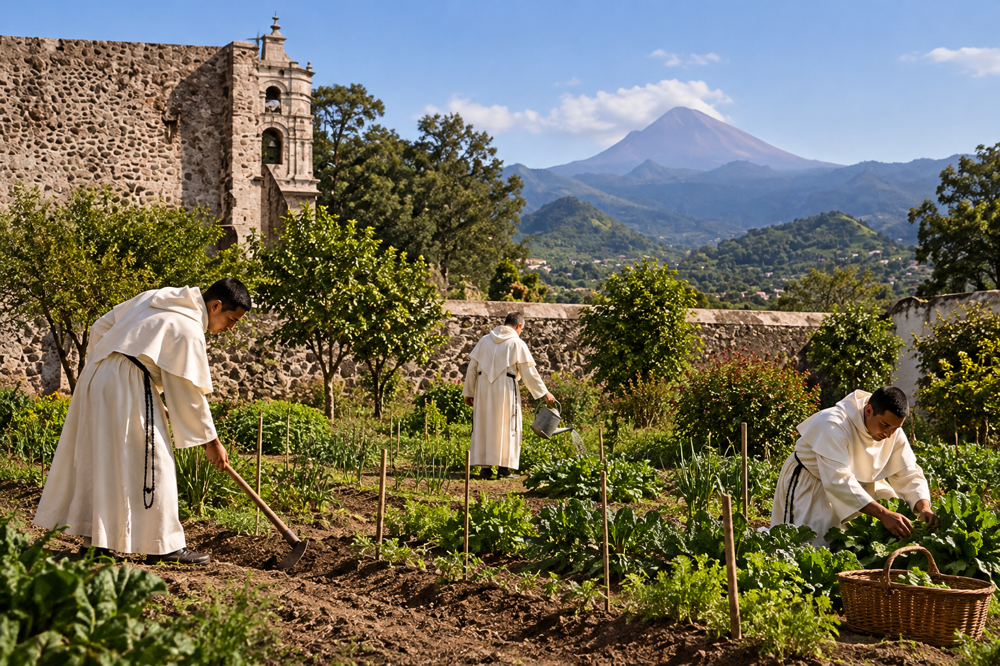

En la vida de los conventos del siglo XVI, el cultivo de la tierra constituía una actividad importante para el sostenimiento de las comunidades religiosas. Los huertos permitían disponer de alimentos frescos y de diversas plantas útiles para las necesidades cotidianas.
En estos espacios podían cultivarse hortalizas, hierbas aromáticas y plantas medicinales. Su aprovechamiento contribuía a la alimentación y al cuidado de los enfermos, dentro de las posibilidades y conocimientos de aquella época.
Los conventos novohispanos fueron también lugares de encuentro entre distintas tradiciones agrícolas. Los cultivos conocidos por los pueblos indígenas convivieron con especies y prácticas introducidas desde Europa.
Para los frailes dominicos, la vida religiosa se encontraba orientada principalmente a la oración, el estudio, la vida comunitaria y la predicación. Sin embargo, las tareas materiales necesarias para sostener el convento también formaban parte de su organización cotidiana.
El trabajo en el huerto nos invita a contemplar la relación entre el ser humano y la creación. La paciencia de sembrar, el cuidado de las plantas y la espera de sus frutos recuerdan que la vida espiritual también requiere constancia, dedicación y esperanza.
El antiguo huerto conventual formó parte de los espacios destinados al cultivo y al sostenimiento de la comunidad religiosa. Actualmente, el terreno que ocupaba ya no pertenece al conjunto parroquial. Esta escena constituye una recreación histórica de las actividades que allí pudieron desarrollarse.
Después de conocer este espacio de cultivo y trabajo, nuestro recorrido continúa hacia las escaleras, que conducen del claustro bajo a la planta superior del antiguo convento.